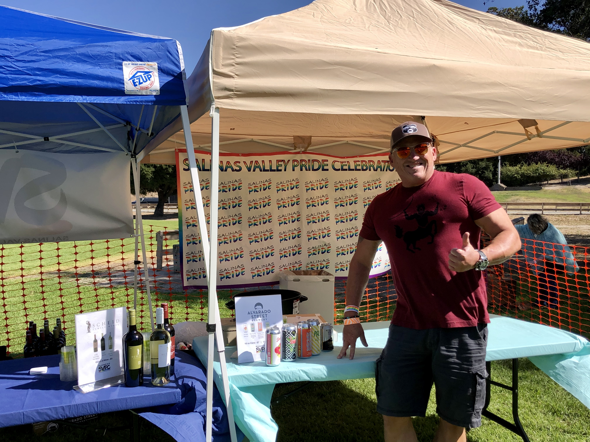

Somone Just Confirmed They Wanted to Donate.
What now?
It's important that we track all donations - this allows SVPC to properly budget, ensures your donor receives the correct reciept, and makes sure the organization is covered in the event of an audit.
Click the tabs below to learn more about what to do when you recieve a donation.
1. Thank them for Supporting SVPC.
It's important to properly thank them for thier donation.
2. Let them know the best way to donate.
Click here to find out more the best way to donate. The QR code below goes directly to our donation portal to allow them to donate via PayPal (Preferred online method). Hold your phone up to let them scan this!
3. Make sure to record the donation in the “Donor Tracking” spreadsheet in the drive.
Click here to open the donor tracking spreadsheet.
*you'll need to be logged into an account that has access to the SVPC drive. Don't have that? Skip this step.

4. Send an email to info@salinasvalleypride.com
This can be an incredibly simple email stating who donated and how much. The time and who is sending this will be recorded via the email timestamp and sender.
5. Follow up to make sure the money came through.
You'll need to reach out to the treasurer to ensure that the money hit the bank. Depending on when the check is recieved, this can take a week or two. The best time to do this is during a monthly board meeting.
* This step is interchangable with Step 6!
6. Write a thank you letter.
Writing a "Thank You" letter serves two purposes:
1. It makes the donor feel valued - something critical that will help them think of us next time they want to donate.
2. It serves as a reciept for the donation, which is critical so they can write it off.
Click Here to see a letter with information about what is included.
This guide is meant to be helpful. Feedback? Please send an email to info@salinasvalleypride.com.